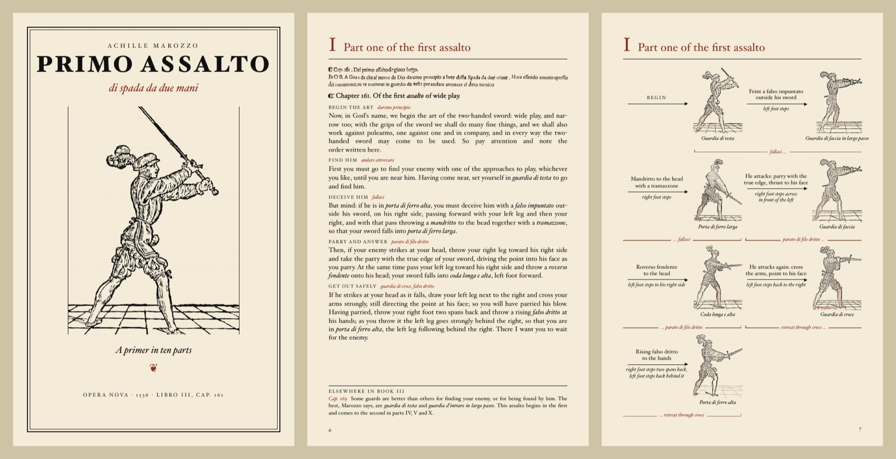
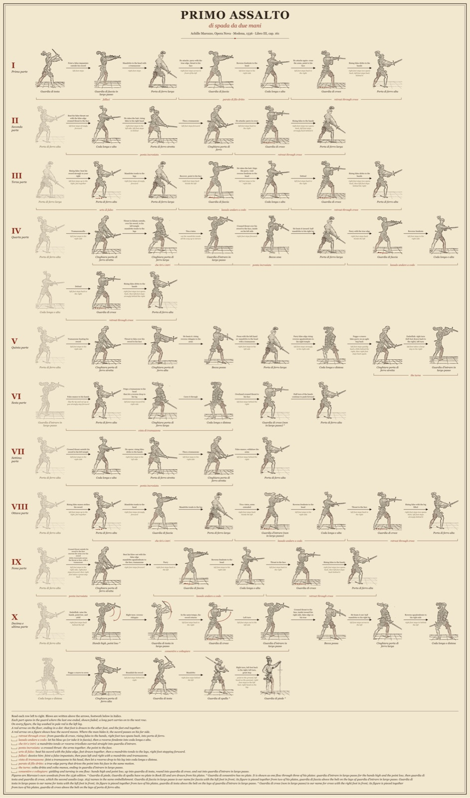
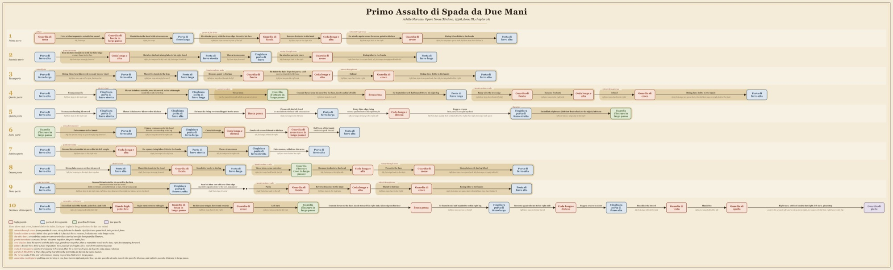

Marozzo · Spadone
Primo assalto
di spada da due mani · Achille Marozzo, Opera Nova, Modena 1536, Libro III, cap. 161 · ten parts
The first assault of the two-handed sword, following a modern interpretation checked against the 1536 text. Each part begins in the guard where the last one ended. Where the interpretation differs from the text, the posters follow the interpretation.
Video, all ten parts: Marozzo's woodcuts dissolving from guard to guard, with each blow and its footwork captioned. Download.

Primer, a 28-page booklet that takes the assalto one part at a time: Marozzo's words in Italian and English, then the sequence in his woodcuts, with space for notes. PDF for reading · PDF for printing (half-letter booklet on seven letter sheets: print double-sided, flip on the short edge, fold in half).

Figure poster, one row per part in Marozzo's own woodcuts: PDF for printing (about 24 × 41 in portrait).

Flow diagram, guards as boxes, blows and footwork on the arrows: PDF for printing (a long strip, about 96 × 29 in landscape). The sequence data is in primo-assalto.json.
Next: Secondo assalto